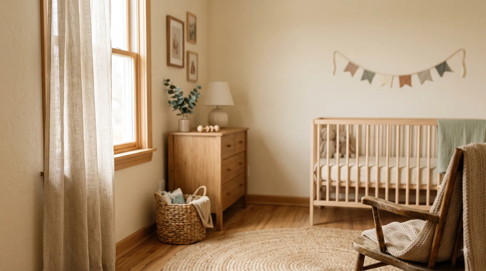

EXEMPLO DE UM DIA
Seis refeições organizadas
- Café da manhã
- Lanche da manhã
- Almoço
- Lanche da tarde
- Jantar
- Ceia

Diagnóstico calórico gratuito
Responda 7 perguntas e veja uma estimativa que considera seu corpo, sua amamentação e sua rotina.
Sem custo, na tela, antes de qualquer coisa.
Passo 1 de 7
Peso registrado. Ele entra na conta junto com as próximas respostas.
“Isso muda a conta.”
Anotado que você amamenta. A partir daqui o cálculo entra num modo diferente: o mínimo calórico seguro passa a considerar isso, item por item, não como observação solta no final.
“Rotina registrada.”
Pouco tempo sobrando pro corpo se mexer, com tudo que uma casa com bebê pequeno exige. Isso não entra na conta como falha, entra como dado.
O cálculo se ajusta pra essa rotina, não pra uma que você não está vivendo.
“Você em movimento.”
Você está se mexendo bastante mesmo com a rotina de agora sendo do jeito que é. Isso muda o gasto que entra na conta, e o cálculo já está incorporando esse número.
“Faixa registrada.”
O cardápio que sai no final já nasce pensado pra essa faixa. Com o que existe de verdade no mercado do seu bairro, em embalagem real, não com ingrediente de vitrine.
DIAGNÓSTICO CALÓRICO PRONTO
Não sobre o bebê, não sobre a casa, não sobre o que falta fazer hoje. Sobre você.
Sua estimativa calórica educativa por dia
{{minimo_calorico}} kcal
Usamos Mifflin-St Jeor para mulheres, fator de atividade 1,375 e, quando há amamentação, acrescentamos 450 kcal antes de aplicar o piso de segurança.
O piso aplicado é de 1.800 kcal durante a amamentação e 1.200 kcal nos demais casos, evitando estimativas extremas.
Como a gente chegou nele:
Nada aqui foi chutado. Cada resposta sua mudou um número na conta.
Seu mínimo calórico seguro por dia, amamentando
{{minimo_calorico}} kcal
É o piso. Comer menos que isso, o corpo prioriza o leite e corta de você primeiro.
Se você tem alguma condição de saúde, usa remédio ou está com alguma preocupação sobre você ou o bebê, converse com uma médica ou nutricionista antes.
Este número é uma referência para você entender por onde começar. Ele não substitui uma consulta e pode até ajudar você a chegar nela com uma pergunta mais clara.
O que esse mínimo destrava, se você seguir ele
Não é sobre o quanto você vai perder. É sobre o que volta.
Isso não tem prazo marcado aqui, porque ninguém consegue prometer prazo pra você com responsabilidade. Tem direção.
Você já tem o número. O que falta ninguém costuma contar: o que fazer com ele, dia a dia, sem virar mais uma aba aberta que você nunca volta a olhar.
Sem compromisso. O número já é seu, continue vendo o resto.
O material
A conta fica salva no material. Você pode abrir de novo quando quiser, sem precisar refazer tudo.
Você recebe café da manhã, almoço, jantar e lanches organizados. Não precisa inventar o que comer todo dia.
A lista mostra pacote, unidade e quilo. É do jeito que os produtos aparecem na prateleira.
Você marcou uma faixa de renda no quiz. O material usa isso para mostrar comidas mais possíveis para a sua casa.
Depois da compra, o material fica disponível para você abrir no celular sem precisar esperar.
Se você travar na hora de abrir o cardápio ou usar a lista, pode chamar o suporte para pedir ajuda.
Veja por dentro
Você abre no celular e já encontra as refeições do dia em ordem. Aqui está um exemplo real para você entender antes de comprar.
EXEMPLO DE UM DIA
LISTA DE COMPRAS
Colocando na ponta do lápis
A Dieta Pós-Parto
Você recebe as refeições organizadas, as trocas e a lista de compras. Tudo separado por semana, sem precisar montar o cardápio do zero.
Frango por ovo
Banana por mamão
Arroz por batata
Por que custa menos?
Numa consulta, você paga por:
Neste material, você recebe:
O valor fica menor porque o cálculo é automático e o material já está pronto individualmente para você. Você não paga pelo tempo de uma consulta individual.
Acesso completo ao material
R$37,00
à vista · pagamento único
12 semanas de cardápio + lista de compras + trocas simples
Quero meu Cardápio PersonalizadoPERGUNTAS DIRETAS
Não vou te dizer "sim, é seguro" e ponto, isso seria papo de vendedor. O que dá pra te dizer é como o número funciona: o quiz calcula o seu mínimo calórico seguro considerando que você está amamentando, pela fórmula de Mifflin-St Jeor, a mesma conta que profissional de saúde usa. Você vê o raciocínio inteiro na tela, não é um número que cai do céu sem explicação. Condição de saúde específica sua ou do bebê continua sendo assunto de pediatra ou nutricionista, isso a gente não substitui. A decisão de seguir ou não é sua, com a conta na mão.
Depende do que você já sabe sobre sua saúde. Se não tem nenhuma condição que te preocupa, o diagnóstico calórico te dá o ponto de partida na hora, sem fila e sem agendar nada. Se você tem alguma questão de saúde específica, sua ou do bebê, ou alguma dúvida que só um profissional resolve, aí vale a pena consultar antes, e o material educativo não substitui isso. A gente não decide por você, só te dá a conta pra você decidir com mais clareza.
Esse é exatamente o ponto do mínimo calórico seguro. A conta não existe só pra empurrar todo mundo pra baixo. Ela mostra o piso, o tanto que seu corpo precisa pra sustentar a amamentação sem faltar energia pra você. Se você já está abaixo desse piso, o cardápio das 12 semanas trabalha pra te levar pra cima dele, não pra baixo. O número é seu ponto de partida, pra mais ou pra menos, dependendo de onde você está agora.
O cardápio se ajusta pela faixa de renda que você informa no quiz: até 2 salários mínimos, de 2 a 4, ou acima disso. A lista de compras vem por quantidade e embalagem real, do jeito que você encontra no mercado, não em xícara ou grama solta. Isso muda os alimentos sugeridos pra caber no que você realmente consegue gastar.
Não. É material educativo com exemplos de referência, construído a partir do seu diagnóstico calórico. Você troca o que não faz sentido pra sua rotina, pro seu gosto, pro que tem na sua casa. Não é um conjunto de regras fixas pra cumprir à risca, é um ponto de partida pra organizar a semana sem ficar reinventando cardápio todo dia com um recém-nascido no colo.
ÚLTIMA PARTE
Falta só a parte que transforma esse número em prato, em lista de compras, em rotina possível pras próximas 12 semanas.
Pagamento único de R$ 37, à vista. Sem parcelamento, sem mensalidade depois.
Você já respondeu o quiz e já viu seu mínimo calórico na tela. Esse número é seu, com ou sem o cardápio. O que falta agora é a parte que transforma esse número em prato de verdade, com lista de compras pela sua faixa de renda.